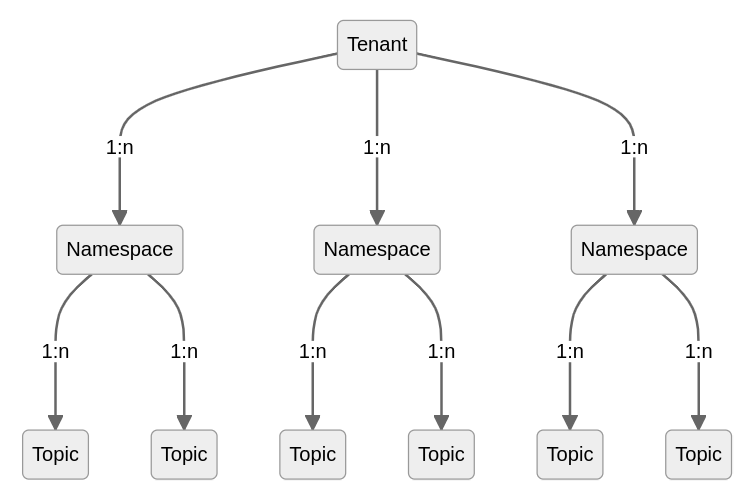

Fastbase¶
Fastbase is a depot type within the DataOS that supports Apache Pulsar format for streaming workloads. Pulsar offers a “unified messaging model” that combines the best features of traditional messaging systems like RabbitMQ and pub-sub (publish-subscribe) event streaming platforms like Apache Kafka. Users can leverage Fastbase depots for their streaming and real-time data workloads.
Commands in DataOS¶
DataOS allows users to manage Fastbase depots effortlessly using CLI. This functionality is made possible by the powerful API capabilities of Depot Service.
The primary command for interacting with the Fastbase Depot in DataOS is dataos-ctl fastbase {{sub-command}}. Using this command, you can perform various operations related to Fastbase.
To execute Fastbase commands, it is necessary to have the
pulsar-admintag. You can check if you have the tag by running dataos-ctl user get in the terminal and verifying the presence of the dataos:u:pulsar:admin tag in the tags column.
How to create and fetch dataset?¶
Create a Dataset¶
By creating and applying a YAML given below, you can create a dataset in Fastbase.
Sample YAML
# example-manifest.yaml
schema: # optional
type: "avro"
avro: '<avro-schema>'
pulsar: # optional
type: "partitioned" or "non-partitioned" #(choose one)
partitions: 2 # optional - use in case the type is: partitioned>dataos-ctl dataset create -a dataos://<pulsar-depot>:default/<topic-name> \ -f path/to/example-manifest.yaml+
Command
dataos-ctl dataset create -a {{udl-address}} -f {{yaml-file-path}}
Click on the toggle to see sample manifests
pulsar: # optional
type: "partitioned" or "non-partitioned" #(chose one)
partitions: 2 # optional - use in case the type is: partitioned
schema:
type: "avro"
avro: '{"type":"record","name":"defaultName","fields":[{"name":"__metadata","type":{"type":"map","values":"string","key-id":10,"value-id":11},"field-id":1},{"name":"city_id","type":["null","string"],"default":null,"field-id":2},{"name":"zip_code","type":["null","int"],"default":null,"field-id":3},{"name":"city_name","type":["null","string"],"default":null,"field-id":4},{"name":"county_name","type":["null","string"],"default":null,"field-id":5},{"name":"state_code","type":["null","string"],"default":null,"field-id":6},{"name":"state_name","type":["null","string"],"default":null,"field-id":7},{"name":"version","type":"string","field-id":8},{"name":"ts_city","type":{"type":"long","logicalType":"timestamp-micros","adjust-to-utc":true},"field-id":9}]}'
pulsar: # optional
type: "partitioned" or "non-partitioned" #(chose one)
partitions: 2 # optional - use in case the type is: partitioned
Fetch a Dataset¶
With the help of the get command, we can gather or fetch all the information on the existing topic in Pulsar’s depot.
dataos-ctl dataset -a dataos://fastbase:default/{{topic-name}} get
Tenant, Namespace, and Topic¶
Messages in Pulsar are published to topics and organized in a three-level hierarchy structure.

- One
tenantrepresents a specific business unit or a product line. Topics created under atenantshare the same business context that is distinct from others. - Within one
tenant, topics having similar behavioral characteristics can be further grouped into a smaller administrative unit called anamespace. Different policies such as message retention or expiry policy, can be set either at thenamespacelevel or at an individualtopiclevel. Policies set at thenamespacelevel will apply to all topics under thenamespace.
The below commands need to be executed in the above hierarchical order.
Tenants¶
List tenants¶
The command tenant list displays the tenants in the DataOS Fastbase.
The tenant is a first-class citizen in Pulsar. Pulsar was created from the ground up as a multi-tenant system. To support multi-tenancy, Pulsar has a concept of tenants. Tenants can be spread across clusters and can each have their own authentication and authorization scheme applied to them. Multi-tenancy with Apache Pulsar deployments refers to authorized namespaces assigned to elastic cluster sets in support of software applications in the cloud data processing.
Command
dataos-ctl fastbase tenant list
Output
INFO[0000] 🔍 list...
INFO[0001] 🔍 list...complete
TENANT
----------
public
pulsar
system
Namespaces¶
Namespaces are logical grouping of topics. After creating a tenant, you can create one or more namespaces **for the tenant.
List namespaces¶
The command namespace list interacts with namespaces in the DataOS Fastbase and also lists the namespaces.
dataos-ctl fastbase namespace -t {{tenant_name}} list
Command
dataos-ctl fastbase namespace -t public list
Output
INFO[0000] 🔍 list...
INFO[0001] 🔍 list...complete
NAMESPACE
-----------------
public/default
Topics¶
Topic in Pulsar is referred to as a dataset in DataOS. Topics are the endpoints for publishing and consuming messages. Producers send the data to pulsar topics, and consumers read them from the same pulsar topic.
We currently support the creation of partitioned and non-partitioned topics, aka datasets with or without schema. The schema format that is currently supported by it is Avro.
List topics¶
The topics are listed with the help of the topic list command.
dataos-ctl fastbase topic -n {{tenant_name}}/{{namespace_name}} list
Command
dataos-ctl fastbase topic -n public/default list
Output
INFO[0000] 🔍 list...
INFO[0001] 🔍 list...complete
TOPIC | PARTITIONED
------------------------------------|----------------
persistent://public/default/public | N
persistent://public/default/user | N
In Pulsar, the name of a topic reflects the following structure:
{persistent|non-persistent}://{{tenant_name}}/{{namespace_name}}/{{topic_name}}
Pulsar has persistent and non-persistent topics.
A persistent topic is a logical endpoint for publishing and consuming messages. The topic name structure for persistent topics is:
persistent://tenant/namespace/topic
Non-persistent topics are used in applications that only consume real-time published messages and do not need persistent guarantees. This way, it reduces message-publish latency by removing the overhead of persisting messages. The topic name structure for non-persistent topics is:
non-persistent://tenant/namespace/topic
Topic consume¶
This command consumes messages from a topic. Also, the consumer and subscription details are displayed with the help of this command.
dataos-ctl fastbase topic consume [flags]
Flags:
-h, --help help for consume
-l, --logMessage Log message (default true)
-p, --logPayload Log payload with message
-s, --startAtFirstMessage Start at the first message in the topic
-t, --topic string FastBase topic to consume messages from
Command (-p, -s, -t flags)
dataos-ctl fastbase topic consume -p -s -t persistent://public/default/random_users_02
Output
INFO[0000] 🔍 consume...
WARN[0003] code: 404 reason: Subscription not found
INFO[0006] [Connecting to broker] remote_addr="pulsar+ssl://tcp.above-dragon.dataos.app:6651"
INFO[0007] [TCP connection established] local_addr="192.168.68.62:50854" remote_addr="pulsar+ssl://tcp.above-dragon.dataos.app:6651"
INFO[0007] [Connection is ready] local_addr="192.168.68.62:50854" remote_addr="pulsar+ssl://tcp.above-dragon.dataos.app:6651"
INFO[0008] [Connecting to broker] remote_addr="pulsar+ssl://tcp.above-dragon.dataos.app:6651"
INFO[0009] [TCP connection established] local_addr="192.168.68.62:50856" remote_addr="pulsar+ssl://tcp.above-dragon.dataos.app:6651"
INFO[0010] [Connection is ready] local_addr="192.168.68.62:50856" remote_addr="pulsar+ssl://tcp.above-dragon.dataos.app:6651"
INFO[0010] [Connected consumer] consumerID=1 name=kipsy subscription=023bd9ba506abcf0e3701c5faa22cf4c8b545bf40fcb607a435fbbcb59be9408 topic="persistent://public/default/random_users_02"
INFO[0010] [Created consumer] consumerID=1 name=kipsy subscription=023bd9ba506abcf0e3701c5faa22cf4c8b545bf40fcb607a435fbbcb59be9408 topic="persistent://public/default/random_users_02"
{"id":"CKoKEAAYACAA","string_id":"1322:0:0","payload":{"age":"","city":"Nova Iguaçu","country":"Brazil","email":"ivone.rezende@example.com","first_name":"Ivone","gender":"female","id":"f87624d4-d04e-47b2-aa1a-81a5a887bc7a","last_name":"","phone":"(76) 7285-1917","postcode":"87183","state":"Mato Grosso","title":"Ms"},"publish_time":"2022-06-22T12:10:12.581+05:30","event_time":"2022-06-22T12:10:12.581+05:30","producer_name":"pulsar-4-623","topic":"persistent://public/default/random_users_02"}
{"id":"CKoKEAEYACAA","string_id":"1322:1:0","payload":{"age":"","city":"Shannon","country":"Ireland","email":"kathleen.richards@example.com","first_name":"Kathleen","gender":"female","id":"9efe2757-f81d-4ec7-9940-14c9a34d1c5c","last_name":"","phone":"051-256-6998","postcode":"55659","state":"Leitrim","title":"Mrs"},"publish_time":"2022-06-22T12:10:12.6+05:30","event_time":"2022-06-22T12:10:12.6+05:30","producer_name":"pulsar-4-623","topic":"persistent://public/default/random_users_02"}
{"id":"CKoKEAIYACAA","string_id":"1322:2:0","payload":{"age":"","city":"Limeira","country":"Brazil","email":"silnior.nogueira@example.com","first_name":"Sílnior","gender":"female","id":"d399586e-d54d-4a92-84fd-b30b4b320012","last_name":"","phone":"(92) 6422-7741","postcode":"74804","state":"Alagoas","title":"Miss"},"publish_time":"2022-06-22T12:10:12.616+05:30","event_time":"2022-06-22T12:10:12.616+05:30","producer_name":"pulsar-4-623","topic":"persistent://public/default/random_users_02"}
{"id":"CKoKEAMYACAA","string_id":"1322:3:0","payload":{"age":"","city":"Weimar","country":"Germany","email":"brigitta.godecke@example.com","first_name":"Brigitta","gender":"female","id":"ffca87ba-72c2-4f40-996e-5aaf233dbd03","last_name":"","phone":"0446-7765109","postcode":"46669","state":"Nordrhein-Westfalen","title":"Mrs"},"publish_time":"2022-06-22T12:10:12.63+05:30","event_time":"2022-06-22T12:10:12.63+05:30","producer_name":"pulsar-4-623","topic":"persistent://public/default/random_users_02"}
{"id":"CKoKEAQYACAA","string_id":"1322:4:0","payload":{"age":"","city":"Ryslinge","country":"Denmark","email":"alberte.mortensen@example.com","first_name":"Alberte","gender":"female","id":"6b3cebd5-b41a-474b-9d5e-4209b29b5097","last_name":"","phone":"15539760","postcode":"70648","state":"Danmark","title":"Ms"},"publish_time":"2022-06-22T12:10:12.727+05:30","event_time":"2022-06-22T12:10:12.727+05:30","producer_name":"pulsar-4-623","topic":"persistent://public/default/random_users_02"}
Command (-p,-s,-t,-l flags)
dataos-ctl fastbase topic consume -p -s -t persistent://public/default/usaflogs -l false
Output
ERRO[0008] [Failed to get last message id from broker] error="connection closed" topic="persistent://public/default/usaflogs"
ERRO[0008] [Failed to get last message id] consumerID=1 error="connection closed" name=023bd9ba506abcf0e3701c5faa22cf4c8b545bf40fcb607a435fbbcb59be9408 subscription=reader-flbtz topic="persistent://public/default/usaflogs"
ERRO[0008] [Failed to get last message id from broker] error="connection closed" topic="persistent://public/default/usaflogs"
ERRO[0008] [Failed to get last message id] consumerID=1 error="connection closed" name=023bd9ba506abcf0e3701c5faa22cf4c8b545bf40fcb607a435fbbcb59be9408 subscription=reader-flbtz topic="persistent://public/default/usaflogs"
ERRO[0008] [Failed to get last message id from broker] error="connection closed" topic="persistent://public/default/usaflogs"
ERRO[0008] [Failed to get last message id] consumerID=1 error="connection closed" name=023bd9ba506abcf0e3701c5faa22cf4c8b545bf40fcb607a435fbbcb59be9408 subscription=reader-flbtz topic="persistent://public/default/usaflogs"
ERRO[0008] [Failed to get last message id from broker] error="connection closed" topic="persistent://public/default/usaflogs"
ERRO[0008] [Failed to get last message id] consumerID=1 error="connection closed" name=023bd9ba506abcf0e3701c5faa22cf4c8b545bf40fcb607a435fbbcb59be9408 subscription=reader-flbtz topic="persistent://public/default/usaflogs"
ERRO[0008] [Failed to get last message id from broker] error="connection closed" topic="persistent://public/default/usaflogs"
ERRO[0008] [Failed to get last message id] consumerID=1 error="connection closed" name=023bd9ba506abcf0e3701c5faa22cf4c8b545bf40fcb607a435fbbcb59be9408 subscription=reader-flbtz topic="persistent://public/default/usaflogs"
INFO[0008] [Connected consumer] consumerID=1 name=023bd9ba506abcf0e3701c5faa22cf4c8b545bf40fcb607a435fbbcb59be9408 subscription=reader-flbtz topic="persistent://public/default/usaflogs"
INFO[0008] [Reconnected consumer to broker] consumerID=1 name=023bd9ba506abcf0e3701c5faa22cf4c8b545bf40fcb607a435fbbcb59be9408 subscription=reader-flbtz topic="persistent://public/default/usaflogs"
ERRO[0008] [Failed to get last message id from broker] error="connection closed" topic="persistent://public/default/usaflogs"
INFO[0008] no more messages to read...exiting
INFO[0008] Closing consumer=1 consumerID=1 name=023bd9ba506abcf0e3701c5faa22cf4c8b545bf40fcb607a435fbbcb59be9408 subscription=reader-flbtz topic="persistent://public/default/usaflogs"
{"id":"CNkBEMYcGAAgAA==","string_id":"217:3654:0","payload":"JjIwMjItMDgtMzFUMTI6MDc6NDNINGNiMTAyNTItNjcwOC00NzgwLWJhOTMtYzg3N2E5NDc0NDgzFEZ1ZWxJbmdlc3QGODc3DGxpdHJlcw==","publish_time":"2022-08-31T17:37:43.841+05:30","event_time":"2022-08-31T17:37:43.841+05:30","producer_name":"pulsar-2-4","topic":"persistent://public/default/usaflogs"}
{"id":"CNkBEMccGAAgAA==","string_id":"217:3655:0","payload":"JjIwMjItMDgtMzFUMTI6MDc6NDdINGNiMTAyNTItNjcwOC00NzgwLWJhOTMtYzg3N2E5NDc0NDgzFEZ1ZWxJbmdlc3QGMTEwDGxpdHJlcw==","publish_time":"2022-08-31T17:37:47.659+05:30","event_time":"2022-08-31T17:37:47.659+05:30","producer_name":"pulsar-2-4","topic":"persistent://public/default/usaflogs"}
INFO[0009] [Closed consumer] consumerID=1 name=023bd9ba506abcf0e3701c5faa22cf4c8b545bf40fcb607a435fbbcb59be9408 subscription=reader-flbtz topic="persistent://public/default/usaflogs"
INFO[0009] [close consumer, exit reconnect] consumerID=1 name=023bd9ba506abcf0e3701c5faa22cf4c8b545bf40fcb607a435fbbcb59be9408 subscription=reader-flbtz topic="persistent://public/default/usaflogs"
INFO[0009] 🔍 read...complete
Topic read¶
The command helps to read the topic, additional flags are given below
dataos-ctl fastbase topic read [flags]
Flags:
-d, --duration string FastBase duration to seek in the past
-h, --help help for read
-l, --logMessage Log message (default true)
-p, --logPayload Log payload with message
-m, --messageId string FastBase message id to start reading from
-t, --topic string FastBase topic to read message from
Command (-p,-t flags)
dataos-ctl fastbase topic read -p -t persistent://public/default/random_users_02
Output
INFO[0000] 🔍 read...
INFO[0006] [Connecting to broker] remote_addr="pulsar+ssl://tcp.above-dragon.dataos.app:6651"
INFO[0007] [TCP connection established] local_addr="192.168.68.62:50854" remote_addr="pulsar+ssl://tcp.above-dragon.dataos.app:6651"
INFO[0007] [Connection is ready] local_addr="192.168.68.62:50854" remote_addr="pulsar+ssl://tcp.above-dragon.dataos.app:6651"
INFO[0008] [Connecting to broker] remote_addr="pulsar+ssl://tcp.above-dragon.dataos.app:6651"
INFO[0009] [TCP connection established] local_addr="192.168.68.62:50856" remote_addr="pulsar+ssl://tcp.above-dragon.dataos.app:6651"
INFO[0010] [Connection is ready] local_addr="192.168.68.62:50856" remote_addr="pulsar+ssl://tcp.above-dragon.dataos.app:6651"
INFO[0010] [Connected consumer] consumerID=1 name=kipsy subscription=023bd9ba506abcf0e3701c5faa22cf4c8b545bf40fcb607a435fbbcb59be9408 topic="persistent://public/default/random_users_02"
INFO[0010] [Created consumer] consumerID=1 name=kipsy subscription=023bd9ba506abcf0e3701c5faa22cf4c8b545bf40fcb607a435fbbcb59be9408 topic="persistent://public/default/random_users_02"
{"id":"CKoKEAAYACAA","string_id":"1322:0:0","payload":{"age":"","city":"Nova Iguaçu","country":"Brazil","email":"ivone.rezende@example.com","first_name":"Ivone","gender":"female","id":"f87624d4-d04e-47b2-aa1a-81a5a887bc7a","last_name":"","phone":"(76) 7285-1917","postcode":"87183","state":"Mato Grosso","title":"Ms"},"publish_time":"2022-06-22T12:10:12.581+05:30","event_time":"2022-06-22T12:10:12.581+05:30","producer_name":"pulsar-4-623","topic":"persistent://public/default/random_users_02"}
{"id":"CKoKEAEYACAA","string_id":"1322:1:0","payload":{"age":"","city":"Shannon","country":"Ireland","email":"kathleen.richards@example.com","first_name":"Kathleen","gender":"female","id":"9efe2757-f81d-4ec7-9940-14c9a34d1c5c","last_name":"","phone":"051-256-6998","postcode":"55659","state":"Leitrim","title":"Mrs"},"publish_time":"2022-06-22T12:10:12.6+05:30","event_time":"2022-06-22T12:10:12.6+05:30","producer_name":"pulsar-4-623","topic":"persistent://public/default/random_users_02"}
{"id":"CKoKEAIYACAA","string_id":"1322:2:0","payload":{"age":"","city":"Limeira","country":"Brazil","email":"silnior.nogueira@example.com","first_name":"Sílnior","gender":"female","id":"d399586e-d54d-4a92-84fd-b30b4b320012","last_name":"","phone":"(92) 6422-7741","postcode":"74804","state":"Alagoas","title":"Miss"},"publish_time":"2022-06-22T12:10:12.616+05:30","event_time":"2022-06-22T12:10:12.616+05:30","producer_name":"pulsar-4-623","topic":"persistent://public/default/random_users_02"}
{"id":"CKoKEAMYACAA","string_id":"1322:3:0","payload":{"age":"","city":"Weimar","country":"Germany","email":"brigitta.godecke@example.com","first_name":"Brigitta","gender":"female","id":"ffca87ba-72c2-4f40-996e-5aaf233dbd03","last_name":"","phone":"0446-7765109","postcode":"46669","state":"Nordrhein-Westfalen","title":"Mrs"},"publish_time":"2022-06-22T12:10:12.63+05:30","event_time":"2022-06-22T12:10:12.63+05:30","producer_name":"pulsar-4-623","topic":"persistent://public/default/random_users_02"}
{"id":"CKoKEAQYACAA","string_id":"1322:4:0","payload":{"age":"","city":"Ryslinge","country":"Denmark","email":"alberte.mortensen@example.com","first_name":"Alberte","gender":"female","id":"6b3cebd5-b41a-474b-9d5e-4209b29b5097","last_name":"","phone":"15539760","postcode":"70648","state":"Danmark","title":"Ms"},"publish_time":"2022-06-22T12:10:12.727+05:30","event_time":"2022-06-22T12:10:12.727+05:30","producer_name":"pulsar-4-623","topic":"persistent://public/default/random_users_02"}
Command (-p,-t,-m flags)
dataos-ctl fastbase topic read -p -t persistent://public/default/usaflogs -d 5s
Output
INFO[0000] 🔍 read...
INFO[0006] [Connecting to broker] remote_addr="pulsar+ssl://tcp.above-dragon.dataos.app:6651"
INFO[0007] [TCP connection established] local_addr="192.168.68.62:50854" remote_addr="pulsar+ssl://tcp.above-dragon.dataos.app:6651"
INFO[0007] [Connection is ready] local_addr="192.168.68.62:50854" remote_addr="pulsar+ssl://tcp.above-dragon.dataos.app:6651"
INFO[0008] [Connecting to broker] remote_addr="pulsar+ssl://tcp.above-dragon.dataos.app:6651"
INFO[0009] [TCP connection established] local_addr="192.168.68.62:50856" remote_addr="pulsar+ssl://tcp.above-dragon.dataos.app:6651"
INFO[0010] [Connection is ready] local_addr="192.168.68.62:50856" remote_addr="pulsar+ssl://tcp.above-dragon.dataos.app:6651"
INFO[0010] [Connected consumer] consumerID=1 name=kipsy subscription=023bd9ba506abcf0e3701c5faa22cf4c8b545bf40fcb607a435fbbcb59be9408 topic="persistent://public/default/random_users_02"
INFO[0010] [Created consumer]
ERRO[0013] [Failed to get last message id] consumerID=1 error="connection closed" name=023bd9ba506abcf0e3701c5faa22cf4c8b545bf40fcb607a435fbbcb59be9408 subscription=reader-nevot topic="persistent://public/default/usaflogs"
ERRO[0013] [Failed to get last message id from broker] error="connection closed" topic="persistent://public/default/usaflogs"
INFO[0013] [Connected consumer] consumerID=1 name=023bd9ba506abcf0e3701c5faa22cf4c8b545bf40fcb607a435fbbcb59be9408 subscription=reader-nevot topic="persistent://public/default/usaflogs"
INFO[0013] [Reconnected consumer to broker] consumerID=1 name=023bd9ba506abcf0e3701c5faa22cf4c8b545bf40fcb607a435fbbcb59be9408 subscription=reader-nevot topic="persistent://public/default/usaflogs"
{"id":"CNkBEIsdGAAgAA==","string_id":"217:3723:0","payload":"JjIwMjItMDgtMzFUMTI6MTE6NDBINGNiMTAyNTItNjcwOC00NzgwLWJhOTMtYzg3N2E5NDc0NDgzEkZ1ZWxTcGVudAgyNDQ4DGxpdHJlcw==","publish_time":"2022-08-31T17:41:40.27+05:30","event_time":"2022-08-31T17:41:40.27+05:30","producer_name":"pulsar-2-4","topic":"persistent://public/default/usaflogs"}
{"id":"CNkBEIwdGAAgAA==","string_id":"217:3724:0","payload":"JjIwMjItMDgtMzFUMTI6MTE6NDJIOGVkMGQ5OGUtNmUwNS00NDhhLWEzNTgtNzQ0MzRlYWVkMjg0EkZ1ZWxTcGVudAY2NzkOZ2FsbG9ucw==","publish_time":"2022-08-31T17:41:42.254+05:30","event_time":"2022-08-31T17:41:42.254+05:30","producer_name":"pulsar-2-4","topic":"persistent://public/default/usaflogs"}
{"id":"CNkBEI0dGAAgAA==","string_id":"217:3725:0","payload":"JjIwMjItMDgtMzFUMTI6MTE6NDRINGNiMTAyNTItNjcwOC00NzgwLWJhOTMtYzg3N2E5NDc0NDgzFEZ1ZWxJbmdlc3QGODQ4DGxpdHJlcw==","publish_time":"2022-08-31T17:41:44.256+05:30","event_time":"2022-08-31T17:41:44.256+05:30","producer_name":"pulsar-2-4","topic":"persistent://public/default/usaflogs"}
{"id":"CNkBEI4dGAAgAA==","string_id":"217:3726:0","payload":"JjIwMjItMDgtMzFUMTI6MTE6NDZIOGVkMGQ5OGUtNmUwNS00NDhhLWEzNTgtNzQ0MzRlYWVkMjg0FEZ1ZWxJbmdlc3QGNDEwDmdhbGxvbnM=","publish_time":"2022-08-31T17:41:46.234+05:30","event_time":"2022-08-31T17:41:46.233+05:30","producer_name":"pulsar-2-4","topic":"persistent://public/default/usaflogs"}
{"id":"CNkBEI8dGAAgAA==","string_id":"217:3727:0","payload":"JjIwMjItMDgtMzFUMTI6MTE6NDhINGNiMTAyNTItNjcwOC00NzgwLWJhOTMtYzg3N2E5NDc0NDgzFEZ1ZWxJbmdlc3QGODMyDGxpdHJlcw==","publish_time":"2022-08-31T17:41:48.137+05:30","event_time":"2022-08-31T17:41:48.137+05:30","producer_name":"pulsar-2-4","topic":"persistent://public/default/usaflogs"}
{"id":"CNkBEJAdGAAgAA==","string_id":"217:3728:0","payload":"JjIwMjItMDgtMzFUMTI6MTE6NDlINGNiMTAyNTItNjcwOC00NzgwLWJhOTMtYzg3N2E5NDc0NDgzEkZ1ZWxTcGVudAY2NzkMbGl0cmVz","publish_time":"2022-08-31T17:41:50.021+05:30","event_time":"2022-08-31T17:41:50.021+05:30","producer_name":"pulsar-2-4","topic":"persistent://public/default/usaflogs"}
Command (-p, -t, -m flags)
dataos-ctl fastbase topic read -p -t persistent://public/default/usaflogs -m CNkBEMccGAAgAA==
Output
ERRO[0014] [Failed to get last message id from broker] error="connection closed" topic="persistent://public/default/usaflogs"
ERRO[0014] [Failed to get last message id] consumerID=1 error="connection closed" name=023bd9ba506abcf0e3701c5faa22cf4c8b545bf40fcb607a435fbbcb59be9408 subscription=reader-bodoo topic="persistent://public/default/usaflogs"
ERRO[0014] [Failed to get last message id from broker] error="connection closed" topic="persistent://public/default/usaflogs"
ERRO[0014] [Failed to get last message id] consumerID=1 error="connection closed" name=023bd9ba506abcf0e3701c5faa22cf4c8b545bf40fcb607a435fbbcb59be9408 subscription=reader-bodoo topic="persistent://public/default/usaflogs"
ERRO[0014] [Failed to get last message id from broker] error="connection closed" topic="persistent://public/default/usaflogs"
ERRO[0014] [Failed to get last message id] consumerID=1 error="connection closed" name=023bd9ba506abcf0e3701c5faa22cf4c8b545bf40fcb607a435fbbcb59be9408 subscription=reader-bodoo topic="persistent://public/default/usaflogs"
ERRO[0014] [Failed to get last message id from broker] error="connection closed" topic="persistent://public/default/usaflogs"
ERRO[0014] [Failed to get last message id] consumerID=1 error="connection closed" name=023bd9ba506abcf0e3701c5faa22cf4c8b545bf40fcb607a435fbbcb59be9408 subscription=reader-bodoo topic="persistent://public/default/usaflogs"
ERRO[0014] [Failed to get last message id from broker] error="connection closed" topic="persistent://public/default/usaflogs"
INFO[0014] [Connected consumer] consumerID=1 name=023bd9ba506abcf0e3701c5faa22cf4c8b545bf40fcb607a435fbbcb59be9408 subscription=reader-bodoo topic="persistent://public/default/usaflogs"
INFO[0014] [Reconnected consumer to broker] consumerID=1 name=023bd9ba506abcf0e3701c5faa22cf4c8b545bf40fcb607a435fbbcb59be9408 subscription=reader-bodoo topic="persistent://public/default/usaflogs"
{"id":"CNkBEMccGAAgAA==","string_id":"217:3655:0","payload":"JjIwMjItMDgtMzFUMTI6MDc6NDdINGNiMTAyNTItNjcwOC00NzgwLWJhOTMtYzg3N2E5NDc0NDgzFEZ1ZWxJbmdlc3QGMTEwDGxpdHJlcw==","publish_time":"2022-08-31T17:37:47.659+05:30","event_time":"2022-08-31T17:37:47.659+05:30","producer_name":"pulsar-2-4","topic":"persistent://public/default/usaflogs"}
{"id":"CNkBEMgcGAAgAA==","string_id":"217:3656:0","payload":"JjIwMjItMDgtMzFUMTI6MDc6NTFINGNiMTAyNTItNjcwOC00NzgwLWJhOTMtYzg3N2E5NDc0NDgzEkZ1ZWxTcGVudAY3NjcMbGl0cmVz","publish_time":"2022-08-31T17:37:51.643+05:30","event_time":"2022-08-31T17:37:51.643+05:30","producer_name":"pulsar-2-4","topic":"persistent://public/default/usaflogs"}
{"id":"CNkBEMkcGAAgAA==","string_id":"217:3657:0","payload":"JjIwMjItMDgtMzFUMTI6MDc6NTZIOGVkMGQ5OGUtNmUwNS00NDhhLWEzNTgtNzQ0MzRlYWVkMjg0EkZ1ZWxTcGVudAQxMA5nYWxsb25z","publish_time":"2022-08-31T17:37:56.769+05:30","event_time":"2022-08-31T17:37:56.769+05:30","producer_name":"pulsar-2-4","topic":"persistent://public/default/usaflogs"}
{"id":"CNkBEMocGAAgAA==","string_id":"217:3658:0","payload":"JjIwMjItMDgtMzFUMTI6MDg6MDFIOGVkMGQ5OGUtNmUwNS00NDhhLWEzNTgtNzQ0MzRlYWVkMjg0FEZ1ZWxJbmdlc3QGMTMwDmdhbGxvbnM=","publish_time":"2022-08-31T17:38:01.823+05:30","event_time":"2022-08-31T17:38:01.823+05:30","producer_name":"pulsar-2-4","topic":"persistent://public/default/usaflogs"}
{"id":"CNkBEMscGAAgAA==","string_id":"217:3659:0","payload":"JjIwMjItMDgtMzFUMTI6MDg6MDZIOGVkMGQ5OGUtNmUwNS00NDhhLWEzNTgtNzQ0MzRlYWVkMjg0FEZ1ZWxJbmdlc3QGMzkyDmdhbGxvbnM=","publish_time":"2022-08-31T17:38:06.941+05:30","event_time":"2022-08-31T17:38:06.941+05:30","producer_name":"pulsar-2-4","topic":"persistent://public/default/usaflogs"}
{"id":"CNkBEMwcGAAgAA==","string_id":"217:3660:0","payload":"JjIwMjItMDgtMzFUMTI6MDg6MTBIOGVkMGQ5OGUtNmUwNS00NDhhLWEzNTgtNzQ0MzRlYWVkMjg0FEZ1ZWxJbmdlc3QGNzk3DmdhbGxvbnM=","publish_time":"2022-08-31T17:38:10.958+05:30","event_time":"2022-08-31T17:38:10.958+05:30","producer_name":"pulsar-2-4","topic":"persistent://public/default/usaflogs"}
{"id":"CNkBEM0cGAAgAA==","string_id":"217:3661:0","payload":"JjIwMjItMDgtMzFUMTI6MDg6MTVIOGVkMGQ5OGUtNmUwNS00NDhhLWEzNTgtNzQ0MzRlYWVkMjg0FEZ1ZWxJbmdlc3QGMTg3DmdhbGxvbnM=","publish_time":"2022-08-31T17:38:15.945+05:30","event_time":"2022-08-31T17:38:15.945+05:30","producer_name":"pulsar-2-4","topic":"persistent://public/default/usaflogs"}
{"id":"CNkBEM4cGAAgAA==","string_id":"217:3662:0","payload":"JjIwMjItMDgtMzFUMTI6MDg6MTlIOGVkMGQ5OGUtNmUwNS00NDhhLWEzNTgtNzQ0MzRlYWVkMjg0EkZ1ZWxTcGVudAYzMzUOZ2FsbG9ucw==","publish_time":"2022-08-31T17:38:19.847+05:30","event_time":"2022-08-31T17:38:19.846+05:30","producer_name":"pulsar-2-4","topic":"persistent://public/default/usaflogs"}
{"id":"CNkBEM8cGAAgAA==","string_id":"217:3663:0","payload":"JjIwMjItMDgtMzFUMTI6MDg6MjNINGNiMTAyNTItNjcwOC00NzgwLWJhOTMtYzg3N2E5NDc0NDgzEkZ1ZWxTcGVudAY0MDAMbGl0cmVz","publish_time":"2022-08-31T17:38:23.936+05:30","event_time":"2022-08-31T17:38:23.936+05:30","producer_name":"pulsar-2-4","topic":"persistent://public/default/usaflogs"}
{"id":"CNkBENAcGAAgAA==","string_id":"217:3664:0","payload":"JjIwMjItMDgtMzFUMTI6MDg6MzZINGNiMTAyNTItNjcwOC00NzgwLWJhOTMtYzg3N2E5NDc0NDgzFEZ1ZWxJbmdlc3QGNDk3DGxpdHJlcw==","publish_time":"2022-08-31T17:38:36.621+05:30","event_time":"2022-08-31T17:38:36.621+05:30","producer_name":"pulsar-2-4","topic":"persistent://public/default/usaflogs"}
{"id":"CNkBENEcGAAgAA==","string_id":"217:3665:0","payload":"JjIwMjItMDgtMzFUMTI6MDg6NDBIOGVkMGQ5OGUtNmUwNS00NDhhLWEzNTgtNzQ0MzRlYWVkMjg0EkZ1ZWxTcGVudAY0NzEOZ2FsbG9ucw==","publish_time":"2022-08-31T17:38:40.433+05:30","event_time":"2022-08-31T17:38:40.433+05:30","producer_name":"pulsar-2-4","topic":"persistent://public/default/usaflogs"}
{"id":"CNkBENIcGAAgAA==","string_id":"217:3666:0","payload":"JjIwMjItMDgtMzFUMTI6MDg6NTBIOGVkMGQ5OGUtNmUwNS00NDhhLWEzNTgtNzQ0MzRlYWVkMjg0FEZ1ZWxJbmdlc3QGMTk1DmdhbGxvbnM=","publish_time":"2022-08-31T17:38:50.739+05:30","event_time":"2022-08-31T17:38:50.739+05:30","producer_name":"pulsar-2-4","topic":"persistent://public/default/usaflogs"}
{"id":"CNkBENMcGAAgAA==","string_id":"217:3667:0","payload":"JjIwMjItMDgtMzFUMTI6MDg6NTRIOGVkMGQ5OGUtNmUwNS00NDhhLWEzNTgtNzQ0MzRlYWVkMjg0FEZ1ZWxJbmdlc3QGMjgyDmdhbGxvbnM=","publish_time":"2022-08-31T17:38:54.638+05:30","event_time":"2022-08-31T17:38:54.637+05:30","producer_name":"pulsar-2-4","topic":"persistent://public/default/usaflogs"}
{"id":"CNkBENQcGAAgAA==","string_id":"217:3668:0","payload":"JjIwMjItMDgtMzFUMTI6MDg6NThINGNiMTAyNTItNjcwOC00NzgwLWJhOTMtYzg3N2E5NDc0NDgzFEZ1ZWxJbmdlc3QGMzk0DGxpdHJlcw==","publish_time":"2022-08-31T17:38:58.526+05:30","event_time":"2022-08-31T17:38:58.526+05:30","producer_name":"pulsar-2-4","topic":"persistent://public/default/usaflogs"}
{"id":"CNkBENUcGAAgAA==","string_id":"217:3669:0","payload":"JjIwMjItMDgtMzFUMTI6MDk6MDBINGNiMTAyNTItNjcwOC00NzgwLWJhOTMtYzg3N2E5NDc0NDgzEkZ1ZWxTcGVudAQ1OAxsaXRyZXM=","publish_time":"2022-08-31T17:39:00.344+05:30","event_time":"2022-08-31T17:39:00.344+05:30","producer_name":"pulsar-2-4","topic":"persistent://public/default/usaflogs"}
{"id":"CNkBENYcGAAgAA==","string_id":"217:3670:0","payload":"JjIwMjItMDgtMzFUMTI6MDk6MDJIOGVkMGQ5OGUtNmUwNS00NDhhLWEzNTgtNzQ0MzRlYWVkMjg0EkZ1ZWxTcGVudAYxMDQOZ2FsbG9ucw==","publish_time":"2022-08-31T17:39:02.353+05:30","event_time":"2022-08-31T17:39:02.353+05:30","producer_name":"pulsar-2-4","topic":"persistent://public/default/usaflogs"}
{"id":"CNkBENccGAAgAA==","string_id":"217:3671:0","payload":"JjIwMjItMDgtMzFUMTI6MDk6MDVIOGVkMGQ5OGUtNmUwNS00NDhhLWEzNTgtNzQ0MzRlYWVkMjg0EkZ1ZWxTcGVudAgxMDI3DmdhbGxvbnM=","publish_time":"2022-08-31T17:39:05.236+05:30","event_time":"2022-08-31T17:39:05.236+05:30","producer_name":"pulsar-2-4","topic":"persistent://public/default/usaflogs"}
{"id":"CNkBENgcGAAgAA==","string_id":"217:3672:0","payload":"JjIwMjItMDgtMzFUMTI6MDk6MDdIOGVkMGQ5OGUtNmUwNS00NDhhLWEzNTgtNzQ0MzRlYWVkMjg0EkZ1ZWxTcGVudAQyMg5nYWxsb25z","publish_time":"2022-08-31T17:39:07.232+05:30","event_time":"2022-08-31T17:39:07.232+05:30","producer_name":"pulsar-2-4","topic":"persistent://public/default/usaflogs"}
{"id":"CNkBENkcGAAgAA==","string_id":"217:3673:0","payload":"JjIwMjItMDgtMzFUMTI6MDk6MTJIOGVkMGQ5OGUtNmUwNS00NDhhLWEzNTgtNzQ0MzRlYWVkMjg0FEZ1ZWxJbmdlc3QGNzY3DmdhbGxvbnM=","publish_time":"2022-08-31T17:39:12.939+05:30","event_time":"2022-08-31T17:39:12.939+05:30","producer_name":"pulsar-2-4","topic":"persistent://public/default/usaflogs"}
INFO[0016] no more messages to read...exiting
INFO[0016] Closing consumer=1 consumerID=1 name=023bd9ba506abcf0e3701c5faa22cf4c8b545bf40fcb607a435fbbcb59be9408 subscription=reader-bodoo topic="persistent://public/default/usaflogs"
INFO[0016] [Closed consumer] consumerID=1 name=023bd9ba506abcf0e3701c5faa22cf4c8b545bf40fcb607a435fbbcb59be9408 subscription=reader-bodoo topic="persistent://public/default/usaflogs"
INFO[0016] [close consumer, exit reconnect] consumerID=1 name=023bd9ba506abcf0e3701c5faa22cf4c8b545bf40fcb607a435fbbcb59be9408 subscription=reader-bodoo topic="persistent://public/default/usaflogs"
INFO[0016] 🔍 read...complete
Command (-p,-t,-l flags)
dataos-ctl fastbase topic read -p -t persistent://public/default/usaflogs -l false
Output
ERRO[0008] [Failed to get last message id from broker] error="connection closed" topic="persistent://public/default/usaflogs"
ERRO[0008] [Failed to get last message id] consumerID=1 error="connection closed" name=023bd9ba506abcf0e3701c5faa22cf4c8b545bf40fcb607a435fbbcb59be9408 subscription=reader-flbtz topic="persistent://public/default/usaflogs"
ERRO[0008] [Failed to get last message id from broker] error="connection closed" topic="persistent://public/default/usaflogs"
ERRO[0008] [Failed to get last message id] consumerID=1 error="connection closed" name=023bd9ba506abcf0e3701c5faa22cf4c8b545bf40fcb607a435fbbcb59be9408 subscription=reader-flbtz topic="persistent://public/default/usaflogs"
ERRO[0008] [Failed to get last message id from broker] error="connection closed" topic="persistent://public/default/usaflogs"
ERRO[0008] [Failed to get last message id] consumerID=1 error="connection closed" name=023bd9ba506abcf0e3701c5faa22cf4c8b545bf40fcb607a435fbbcb59be9408 subscription=reader-flbtz topic="persistent://public/default/usaflogs"
ERRO[0008] [Failed to get last message id from broker] error="connection closed" topic="persistent://public/default/usaflogs"
ERRO[0008] [Failed to get last message id] consumerID=1 error="connection closed" name=023bd9ba506abcf0e3701c5faa22cf4c8b545bf40fcb607a435fbbcb59be9408 subscription=reader-flbtz topic="persistent://public/default/usaflogs"
ERRO[0008] [Failed to get last message id from broker] error="connection closed" topic="persistent://public/default/usaflogs"
ERRO[0008] [Failed to get last message id] consumerID=1 error="connection closed" name=023bd9ba506abcf0e3701c5faa22cf4c8b545bf40fcb607a435fbbcb59be9408 subscription=reader-flbtz topic="persistent://public/default/usaflogs"
INFO[0008] [Connected consumer] consumerID=1 name=023bd9ba506abcf0e3701c5faa22cf4c8b545bf40fcb607a435fbbcb59be9408 subscription=reader-flbtz topic="persistent://public/default/usaflogs"
INFO[0008] [Reconnected consumer to broker] consumerID=1 name=023bd9ba506abcf0e3701c5faa22cf4c8b545bf40fcb607a435fbbcb59be9408 subscription=reader-flbtz topic="persistent://public/default/usaflogs"
ERRO[0008] [Failed to get last message id from broker] error="connection closed" topic="persistent://public/default/usaflogs"
INFO[0008] no more messages to read...exiting
INFO[0008] Closing consumer=1 consumerID=1 name=023bd9ba506abcf0e3701c5faa22cf4c8b545bf40fcb607a435fbbcb59be9408 subscription=reader-flbtz topic="persistent://public/default/usaflogs"
{"id":"CNkBEMYcGAAgAA==","string_id":"217:3654:0","payload":"JjIwMjItMDgtMzFUMTI6MDc6NDNINGNiMTAyNTItNjcwOC00NzgwLWJhOTMtYzg3N2E5NDc0NDgzFEZ1ZWxJbmdlc3QGODc3DGxpdHJlcw==","publish_time":"2022-08-31T17:37:43.841+05:30","event_time":"2022-08-31T17:37:43.841+05:30","producer_name":"pulsar-2-4","topic":"persistent://public/default/usaflogs"}
{"id":"CNkBEMccGAAgAA==","string_id":"217:3655:0","payload":"JjIwMjItMDgtMzFUMTI6MDc6NDdINGNiMTAyNTItNjcwOC00NzgwLWJhOTMtYzg3N2E5NDc0NDgzFEZ1ZWxJbmdlc3QGMTEwDGxpdHJlcw==","publish_time":"2022-08-31T17:37:47.659+05:30","event_time":"2022-08-31T17:37:47.659+05:30","producer_name":"pulsar-2-4","topic":"persistent://public/default/usaflogs"}
INFO[0009] [Closed consumer] consumerID=1 name=023bd9ba506abcf0e3701c5faa22cf4c8b545bf40fcb607a435fbbcb59be9408 subscription=reader-flbtz topic="persistent://public/default/usaflogs"
INFO[0009] [close consumer, exit reconnect] consumerID=1 name=023bd9ba506abcf0e3701c5faa22cf4c8b545bf40fcb607a435fbbcb59be9408 subscription=reader-flbtz topic="persistent://public/default/usaflogs"
INFO[0009] 🔍 read...complete